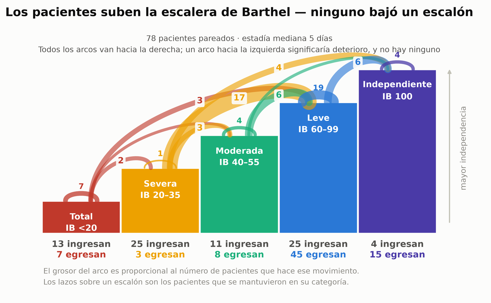
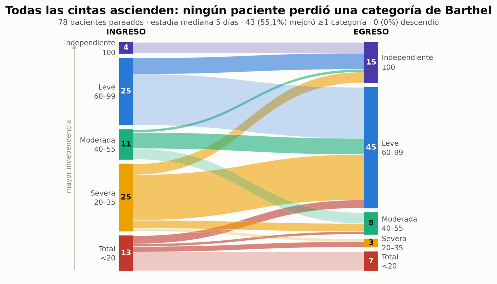
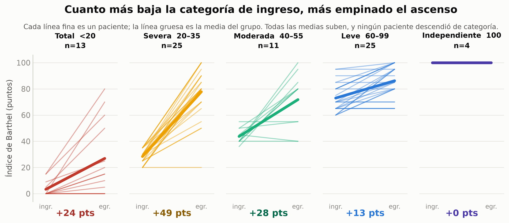
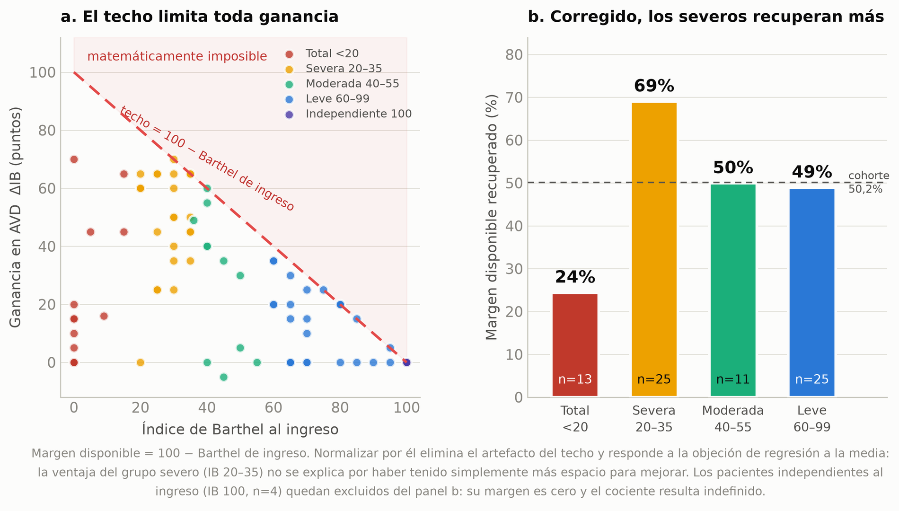
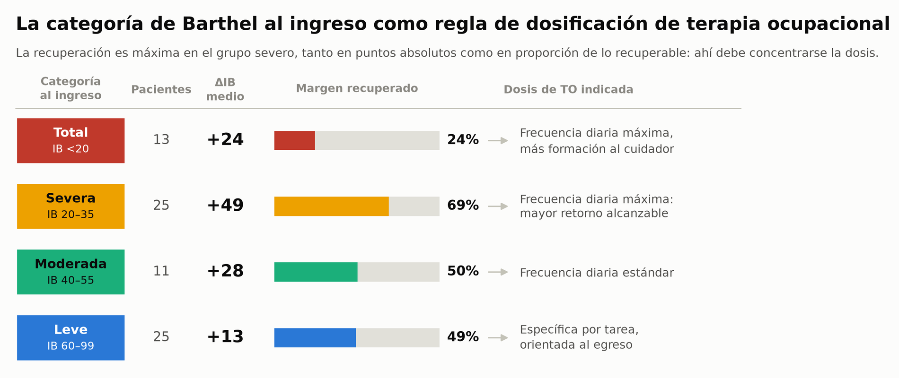

El ACV es la tercera causa de muerte y discapacidad en el mundo. La evidencia que respalda a la terapia ocupacional (TO) dentro de la neurorrehabilitación aguda interdisciplinaria — junto a kinesiología y fonoaudiología — sigue siendo limitada. Este estudio determinó la relación entre el estado funcional al ingreso y la magnitud de la recuperación en AVD durante la hospitalización por ACV, desde la perspectiva de la TO.
Diseño retrospectivo sin grupo control, por lo que no puede atribuirse causalidad a la TO. La atrición no fue aleatoria: los 26 de 104 pacientes sin Barthel pareado eran mayores (76,5 frente a 69,8 años) y con estadías más largas. El Barthel de egreso es una medición intrahospitalaria y su transferencia al desempeño domiciliario no está establecida.

El Barthel de ingreso predijo significativamente la ganancia funcional (r = −0,446; p < 0,001), con una ganancia media de +27,9 puntos en una estadía mediana de cinco días. De 78 pacientes pareados, 43 (55,1%) mejoró al menos una categoría de Barthel y ninguno descendió de categoría; el 98,7% no tuvo deterioro de puntaje, con un paciente que perdió 5 puntos sin cambiar de categoría. La recuperación fue independiente del subtipo de ACV (H = 2,33; p = 0,311).

El grupo severo (IB 20–35) fue el que más ganó en términos absolutos: +49 puntos, con 21 de 25 pacientes alcanzando dependencia leve o independencia al egreso.


Como el techo del Barthel limita la ganancia posible, la recuperación se normalizó por el margen realmente disponible: ΔIB ÷ (100 − IB de ingreso). El grupo severo recuperó el 69% de lo que tenía por recuperar, frente al 50,2% de la cohorte, de modo que su ventaja no es un artefacto de haber dispuesto de más espacio. Los pacientes con dependencia total (IB <20) recuperaron solo el 24% de su propio margen.

Cognición. La edad se asoció al cambio cognitivo (r = 0,316; p = 0,008); el grupo de 76–90 años mostró la mayor ganancia (ΔMMSE +2,7; p = 0,005), explicada por un efecto techo en los pacientes más jóvenes. La independencia al egreso (IB ≥ 60) varió entre 81,0% (≤60 años) y 40,0% (>90 años).
La hospitalización aguda por ACV es una ventana primaria de neurorrehabilitación, no un período de espera previo a la rehabilitación. La relación inversa entre el Barthel de ingreso y la magnitud de la recuperación respalda categorizar la frecuencia de sesiones de TO según el IB: a mayor compromiso, mayor intensidad diaria de intervención.
Esa regla la sustenta un estudio observacional de cohorte nacional de 2025 (n = 39.140), según el cual la rehabilitación aguda de alta dosis beneficia sobre todo a quienes tienen compromiso grave de AVD basal. La ausencia de deterioro de categoría funcional y la tasa de recuperación del 84,0% entre los pacientes severos aportan evidencia clínica a favor de dotación dedicada de terapia ocupacional en unidades de ACV agudo.